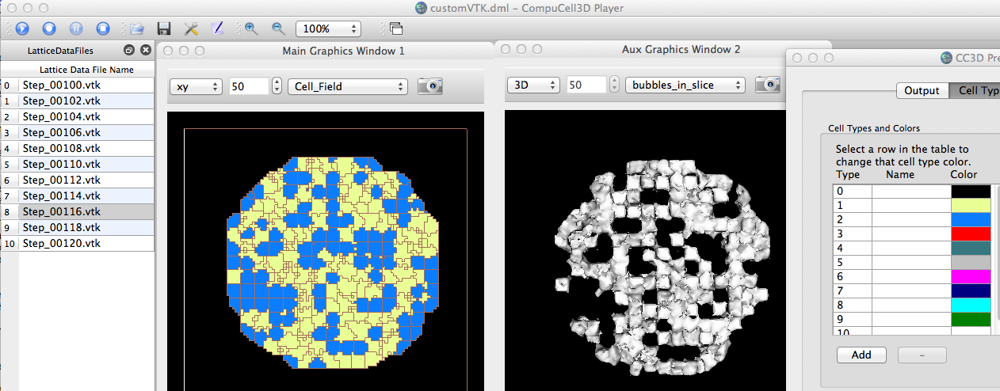
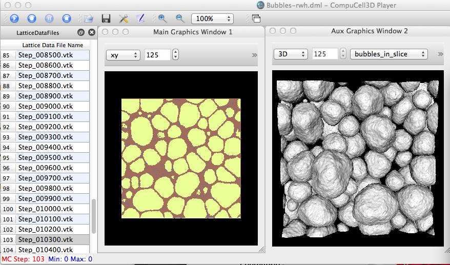
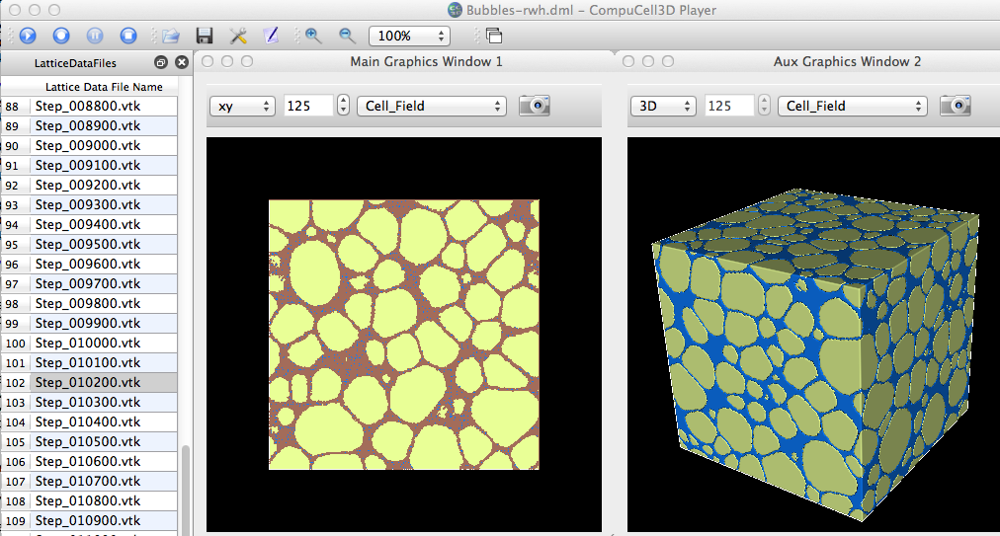

It is now possible to use custom Python-VTK scripts on .vtk files that are being played back from a .dml (File -> Open Lattice Description Summary File). To do so, one would copy/edit a .dml file (generated when saving .vtk lattice files via Prefs: Output: Save lattice...) and add a "CustomVis" field with an associated Python-VTK script. For example:
<CompuCell3DLatticeData Version="1.0">
<Dimensions x="100" y="100" z="100"/>
<Lattice Type="Square"/>
<Output CoreFileName="Step" Directory="/Users/heiland/CC3DWorkspace/cellsort_3D_xml_01_24_2012_13_26_20/LatticeData" Frequency="1" NumberOfSteps="10000"/>
<CellType TypeId="0" TypeName="Medium"/>
<CellType TypeId="1" TypeName="Condensing"/>
<CellType TypeId="2" TypeName="NonCondensing"/>
<Fields>
<Field Name="Cell_Field" Type="CellField"/>
<Field Name="bubbles_in_slice" Type="CustomVis" Script="/Users/heiland/dev/vtk-cc3d-play/bubbles1.py"/>
</Fields>
</CompuCell3DLatticeData>
Note that you need to provide the full path to the Python-VTK script. The following is the script used here. It uses the center slice of a 3D lattice to extract contours (vtkDiscreteMarchingCubes) of only cell type 1.
~/dev/vtk-cc3d-play$ ty bubbles1.py
import vtk
from vtk.util.numpy_support import numpy_to_vtk, vtk_to_numpy
print 'bubbles1.py: globals()["vtkFile"] = ',globals()["vtkFile"]
slice_num = 125
slice_num = 50
print 'slice_num=',slice_num
# blue -> red LUT
lutBlueRed = vtk.vtkLookupTable()
lutBlueRed.SetHueRange(0.667,0.0)
lutBlueRed.Build()
reader = vtk.vtkDataSetReader()
reader.SetFileName(globals()["vtkFile"])
aax = vtk.vtkAssignAttribute()
aax.SetInputConnection(reader.GetOutputPort())
#aax.Assign("CellId","SCALARS","POINT_DATA")
aax.Assign("CellType","SCALARS","POINT_DATA")
aax.Update()
srange = aax.GetOutput().GetScalarRange()
#print 'CellType range: ',srange # CellId: (748.0, 725445.0); CellType: (1.0, 2.0)
ct_voi = vtk.vtkExtractVOI()
ct_voi.SetInputConnection(aax.GetOutputPort())
ct_voi.SetVOI(0,249,0,249,slice_num,slice_num)
ct_voi.SetSampleRate(2,2,2)
ct_voi.SetSampleRate(1,1,1)
ct_voi.Update()
pd = ct_voi.GetOutput().GetPointData()
ct = pd.GetScalars() # (vtkCharArray)0x10d358730
#print type(ct)
ct_array = vtk_to_numpy(ct) # --> numpy.ndarray
#print 'max(ct_array)=',max(ct_array)
#-------
aax.Assign("CellId","SCALARS","POINT_DATA")
aax.Update()
srange = aax.GetOutput().GetScalarRange()
#print 'CellId range: ',srange # CellId: (748.0, 725445.0); CellType: (1.0, 2.0)
cid_voi = vtk.vtkExtractVOI()
cid_voi.SetInputConnection(aax.GetOutputPort())
cid_voi.SetVOI(0,249,0,249,slice_num,slice_num)
cid_voi.SetSampleRate(2,2,2)
cid_voi.SetSampleRate(1,1,1)
cid_voi.Update()
pd = cid_voi.GetOutput().GetPointData()
cid = pd.GetScalars() # (vtkCharArray)0x10d358730
#print type(cid)
cid_array = vtk_to_numpy(cid) # --> numpy.ndarray
#print 'max(cid_array)=',max(cid_array)
#-------------------
#len(na) # -> 15625 (due to sample rate=2; 250^2 = 62500; 125^2 = 15625
unique_cell_ids = []
#print 'len(ct_array)=',len(ct_array)
for idx in range(len(ct_array)):
if ct_array[idx] == 1: # celltype for bubble
cid = cid_array[idx]
# if idx < 10: print cid
if cid not in unique_cell_ids:
unique_cell_ids.append(cid)
# print unique_cell_ids
cont = vtk.vtkDiscreteMarchingCubes()
cont.SetInputConnection(aax.GetOutputPort())
maxBubbles = 10
maxBubbles = len(unique_cell_ids)
for idx in range(maxBubbles):
cont.SetValue(idx,unique_cell_ids[idx])
#norm = vtk.vtkPolyDataNormals()
#norm.SetInputConnection(cont.GetOutputPort())
smoother = vtk.vtkSmoothPolyDataFilter()
smoother.SetInputConnection(cont.GetOutputPort())
smoother.SetNumberOfIterations(50)
smoother.SetNumberOfIterations(300)
smoother.SetNumberOfIterations(500)
smoother.SetNumberOfIterations(1)
smoother.SetNumberOfIterations(150)
normals = vtk.vtkPolyDataNormals()
normals.SetInputConnection(smoother.GetOutputPort())
normals.FlipNormalsOn()
mapper = vtk.vtkDataSetMapper()
#mapper.SetInputConnection(aax.GetOutputPort())
#mapper.SetInputConnection(voi.GetOutputPort())
#mapper.SetInputConnection(cont.GetOutputPort())
mapper.SetInputConnection(normals.GetOutputPort())
mapper.ScalarVisibilityOff()
#mapper.ScalarVisibilityOn()
#mapper.SetScalarRange(srange)
#mapper.SetLookupTable(lutBlueRed)
globals()["actorObj"].SetMapper( mapper )
bf=vtk.vtkProperty()
#bf.SetSpecular(0.0)
#bf.SetDiffuse(0.0)
#bf.SetAmbient(1.0)
#bf.SetAmbientColor(1.0,.38,.28)
bf.SetColor(1.0,.38,.28)
bf.SetColor(0.0,0.0,0.0)
#----------------------
outline = vtk.vtkOutlineFilter()
outline.SetInputConnection(aax.GetOutputPort())
mapOutline = vtk.vtkPolyDataMapper()
mapOutline.SetInputConnection(outline.GetOutputPort())
outlineActor = vtk.vtkActor()
outlineActor.SetMapper(mapOutline)
outlineActor.GetProperty().SetColor(1, 1, 1)
#ren1.AddActor(outlineActor)
#----------------------
scalarBar = vtk.vtkScalarBarActor()
#scalarBar.SetLookupTable(lutBlueRed)
scalarBar.SetLookupTable(mapper.GetLookupTable())
#scalarBar.GetPositionCoordinate().SetCoordinateSystemToNormalizedViewport()
#scalarBar.GetPositionCoordinate().SetValue(0.8,0.05)
#scalarBar.SetOrientationToVertical()
scalarBar.SetWidth(0.08)
#scalarBar.SetHeight(0.9)
scalarBar.SetPosition(0.9,0.1)
#scalarBar.SetLabelFormat("%-#6.3f")
#scalarBar.SetLabelFormat("%-#3.1f")
#scalarBar.GetLabelTextProperty().SetColor(1,1,1)
#scalarBar.GetTitleTextProperty().SetColor(1,0,0)
scalarBar.SetTitle('CellId')
scalarBar.SetTitle('CellType')
#ren1.AddActor2D(scalarBar)

Actually, this script was originally intended to operate on Gilberto's wet bubble simulation data:

Note that the above is probably preferable to doing a normal cell_field 3D rendering:

The key methods modified/created for this functionality are: